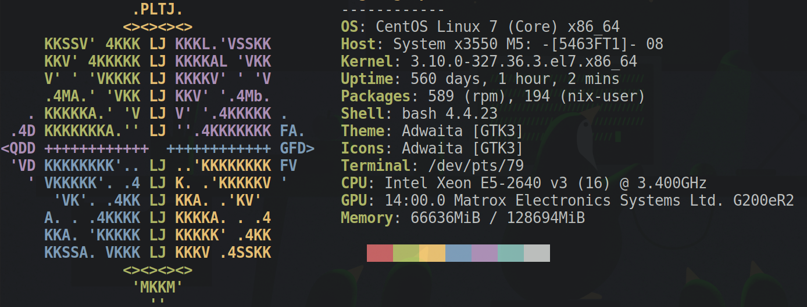

Nix From The Dark Ages: Without Root
Rohit Goswami
Created: 2020-10-17 Sat 10:19
Hello NixCon!
- Find me here: https://rgoswami.me
- Who?
- Rohit Goswami MInstP AMIChemE AMIE
- Doctoral Researcher, University of Iceland, Faculty of Physical Sciences
- Rohit Goswami MInstP AMIChemE AMIE

Big Picture
Academic Clusters
Woes
- No
docker- If lucky, will have
singularity
- If lucky, will have
- No userspace support
- No
proot
- No
- Probably runs CentOS or something
- Has a networked file system
- Uses a resource queue
- Slurm, PBS
- Might have support for
lmod

Why?
Necessary Evil
- Users can’t be trusted
- Massive amounts of resources are consumed
- Resource limits are tracked
However
- Users need new software
- Developers need guarantees of high resources
- To test parallelism and more
Where’s Nix?
- Nix is the solution [dolstraNixSafePolicyFree2004]
- Used by some scientific software too [goswamiDSEAMSDeferredStructural2020]
Does no one use it then?
- Some clusters have
nixsupport
- They actually support it though
- GRICAD has [bzeznikNixHPCPackage2017]
- The Flatiron Institute and Compute Canada also support
nix
- What if no-one cared?
- Then you end up here (post)
Where are we?
Methodology Review
Concept
- Somehow get
nixto build- Do unholy things to paths
- Indiscriminate source pruning
- Let
nixre-install itself
Acknowledgements
Who worked on it first?
- jefdaj/nix-no-root
- Built upto
2.0.4apparently
- Built upto
- pjotrp/nix-no-root
- Seemingly abandoned after 2015
Hooray?
- Not quite!
What went wrong?
- Massive waste of resources
- Though they can be traced to the user
- Effectively builds on the login node (~ 3 hours)
- Can’t be helped without integration with a queue
What do we need?
Better Permission Handling
- e.g. building
rubyinvolves:
watch -n1 -x chmod 777 -R /tmp/nix-build-ruby-2.6.6.drv-0/source/lib/
- Less gratuitous permissions might be set
Better NFS Locks
- Maybe even build in a temporary directory until the lock is released
- Currently one of the “fixes” includes:
nix-build
# something about a .nfs lockfile in some .nix/$HASH-pkg/.nfs0234234
mv .nix/$HASH-pkg/ .diePKGs/
nix-build # profit
Bills and Queues
Builder Provenance
- Who built what?
- a.k.a. Billing
- Honestly the only way to make this go mainstream
Queue Integration
- Can only build on the head node
- Need
slurmor PBS to run on the whole cluster
- Need
Future Directions
Union Mount
- Proposed here
- by
catern
- by
- Would reduce compilation
- Currently does not actually replace the global store
Personal Goals
- Native file path test
- Hash relative to a prefix
- Cleaner Setup
- Maybe a derivation
- Return Next Year!
- Hopefully with cleaner methods
The End
Bibliography
- [bzeznikNixHPCPackage2017] Bzeznik, Henriot, Reis, Richard & Tavard, Nix as HPC Package Management System, 1-6, in in: Proceedings of the Fourth International Workshop on HPC User Support Tools - HUST'17, edited by ACM Press
- [dolstraNixSafePolicyFree2004] Dolstra, family=Jonge & Visser, Nix: A Safe and Policy-Free System for Software Deployment, , 15 .
- [goswamiDSEAMSDeferredStructural2020] Goswami, Goswami & Singh, D-SEAMS: Deferred Structural Elucidation Analysis for Molecular Simulations, Journal of Chemical Information and Modeling, 60(4), 2169-2177 . doi.